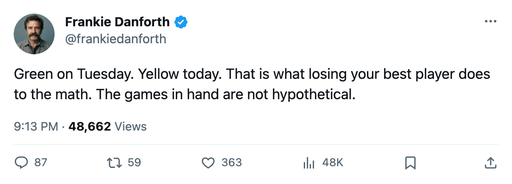
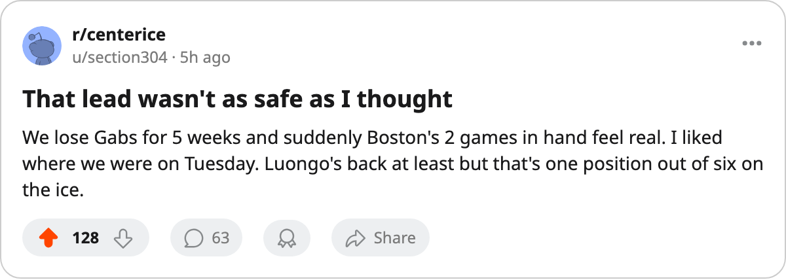

DANFORTH: Code Yellow, 38 days without the 99, and 2 games in hand
The streak died against Detroit. The salary is on the shelf until Christmas. And Boston closes the gap on Sunday with games we haven't played.
 Frankie DanforthColumnist · Queen City Telegram
Frankie DanforthColumnist · Queen City Telegram
Code Yellow

I was ready to let this week breathe. Three straight wins, a Cup-winning goaltender back in the crease for Sunday, and a 6-point lead at the top of the Northeast. Code Green. I said it Tuesday morning and I meant it. I take some of it back.
The leg injury that puts  Marian Gaborik99 in the press box until December 25 changes the arithmetic. The 99 is gone. So is the $11.90M. The 6 goals are gone, the 22.6 minutes a night, all of it. Pull that out and the line has no centre of gravity.
Marian Gaborik99 in the press box until December 25 changes the arithmetic. The 99 is gone. So is the $11.90M. The 6 goals are gone, the 22.6 minutes a night, all of it. Pull that out and the line has no centre of gravity.
The  Toronto Maple Leafs Maple Leafs lost 1-2 to
Toronto Maple Leafs Maple Leafs lost 1-2 to  Detroit Red Wings Detroit on Tuesday, the 1st loss in 7 games. That one I could have lived with. A bad night against a Central Division club with a 79-graded defenseman on the shelf and a 78-graded left wing on the shelf. Nothing to it.
Detroit Red Wings Detroit on Tuesday, the 1st loss in 7 games. That one I could have lived with. A bad night against a Central Division club with a 79-graded defenseman on the shelf and a 78-graded left wing on the shelf. Nothing to it.
But I count forward now. Sunday,  Boston Bruins Boston is here with 22 points in 16 games. We have 28 in 18. Two games in hand. If they take four from those two, the gap is 2. Two points with a 0-1 series deficit. A 6-point cushion that was a fact on Tuesday morning is a rounding error by Sunday evening.
Boston Bruins Boston is here with 22 points in 16 games. We have 28 in 18. Two games in hand. If they take four from those two, the gap is 2. Two points with a 0-1 series deficit. A 6-point cushion that was a fact on Tuesday morning is a rounding error by Sunday evening.
 Roberto Luongo95 is back, and that is the one piece of good news in a bad 24 hours. I trust the man between the pipes more than I trust most things in hockey. He stopped every shot in Game 7 last May and I remember all 37 of them.
Roberto Luongo95 is back, and that is the one piece of good news in a bad 24 hours. I trust the man between the pipes more than I trust most things in hockey. He stopped every shot in Game 7 last May and I remember all 37 of them.
What I do not trust is a right wing shuffle at 10 in the morning that hasn't happened yet.  Maxim Afinogenov86 has 12 points and 18.1 minutes on the 2nd line.
Maxim Afinogenov86 has 12 points and 18.1 minutes on the 2nd line.  Stanislav Chistov87 has 9 points and 17.9 minutes on the 2nd line. You pull one of them up and the other side of the room gets worse. You put
Stanislav Chistov87 has 9 points and 17.9 minutes on the 2nd line. You pull one of them up and the other side of the room gets worse. You put  Nikita Alexeev80 in and you drop from 99 to 80 and hope for the best. You put
Nikita Alexeev80 in and you drop from 99 to 80 and hope for the best. You put  Rick Nash85 in on the right side at 21 and you are asking him to play a position he hasn't played all year.
Rick Nash85 in on the right side at 21 and you are asking him to play a position he hasn't played all year.
Petr Chlup87 has 15 points in 18 games at 19 years old and the Bureau's Index has him at +6. I have been saying for a year that the answer at centre is a kid with legs and hands and no mortgage. He is that kid. He does not need Gaborik to make my case. But he could use a right wing who is not an experiment.
The gap was a fact on Tuesday. It is a question mark now. Code Yellow.

